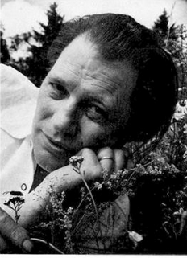

Bild - HM Verk HARRY MARTINSON (1904-1978) hade en uppväxt märkt av största armod.
Som sjuåring ackorderades han som sockenbarn och gick under flera år från fosterhem till fosterhem, många av dem rymde han ifrån.
Ljuspunkten i hans liv och skolläraren